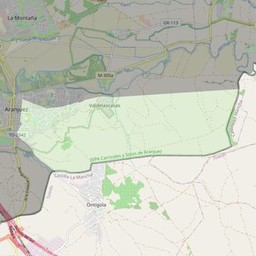

San Pascual
- Arciprestazgo
- Aranjuez
- Población
- Aranjuez
- Dirección postal
- Avda. Plaza de Toros, 42
- Código postal
- 28300
- Extensión
- 14,48 km² (1.448 ha)
- Teléfono
- 918 917 850
- Correo electrónico
- parroquiasanpascual.aranjuez@gmail.com
- Información demográfica
- De la parroquia · De la población (Aranjuez) · Del arciprestazgo (Aranjuez)


Descargar mapaLímites según decreto
"Partiendo de la confluencia de las calles Capitán Angosto G. Castrillón y Las Infantas, arrancan por el eje de la calle Las Infantas (en dirección sureste); siguen por el eje de la calle Almansa (en dirección sureste), por el eje de la calle Los Cuarteles (en dirección noreste), por una línea recta imaginaria hasta el límite de las provincias de Madrid Toledo (en dirección este), por el límite de las provincias Madrid-Toledo (en dirección suroeste), por el eje de la carretera de Ontígola (TO-3115, en dirección noroeste), por el eje de la calle Carretas (en dirección noreste), por el eje de la calle Capitán Angosto G. Castrillón (en dirección norte) hasta la confluencia con la calle Las Infantas, punto de partida. Decreto de rectificación de límites del 21-6-2005; B.O. de julio -agosto de 2005, pág. 781)